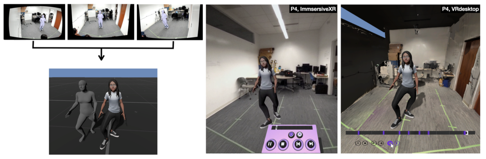
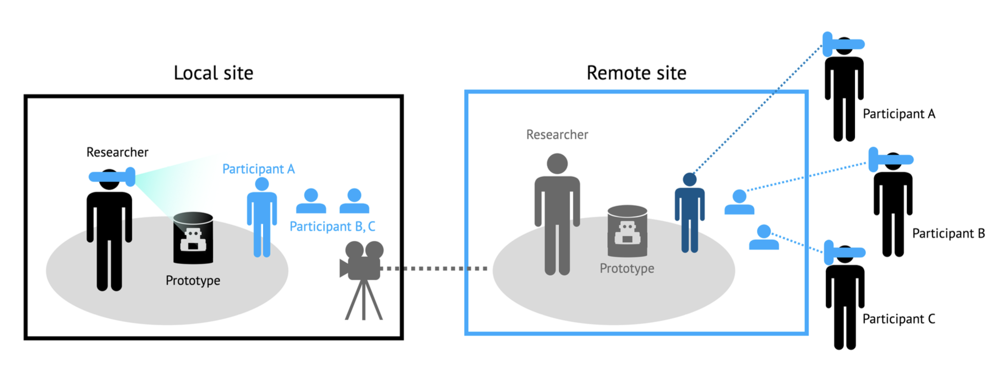

About me
Hello! üåº I am a Ph.D. student in Information Science at Cornell University. My research aims to articulate telepresence by designing remote collaboration tools.
As inspiring HCI researcher, my research goal is to investigate how to facilitate interaction between humans using Extended Reality or robotic embodiment, connecting these interactions from virtual space to real space. I have been developing VR/AR systems to support remote collaboration and analyzing nonverbal behaviors. Furthermore, I have been working on investigating the influence of robotic or virtual embodiment on physical and cognitive abilities.
Prior to joining Cornell, I worked as a Research Assistant at the AI & Robot Institute at KIST (Korea Institute of Science and Technology). I earned my Master's degree in Culture Technology from KAIST in 2019, and my Bachelor's degree in Electrical Engineering from Ewha Womans University in 2017.
Beyond my studies, I love exploring new destinations üß≥, trying out new activities üöÄ, and adding to my collection of badges & postcards üíå! I'm always on the lookout for my next thrilling journey.
In-Progress
-
Exploring the Influence of Representation in Asymmetric Telepresence System
Remote collaboration techniques often involve immersive methods for some collaborators, while others employ robotic surrogates to engage with remote counterparts. The choice between a physical robot and a virtual avatar as a representation raises questions about the balance between realism and flexibility. This study investigates which representation, whether a physical robot or a virtual avatar, is more effective for local collaborators, particularly in terms of their perception of remote users. It also explores how these representations impact copresence, specifically regarding peripheral awareness and understanding of the dynamics in remote collaboration.
-
Extended Reflection: Enhancing Teachers’ Reflective Practices through XR
This study examines the use of Extended Reality (XR) as a tool to enhance teachers' self-reflection on their nonverbal instructional techniques. Through experimentation with ten teachers using two XR prototypes, Immersive XR and VR Desktop, participants reviewed their previous teaching sessions to assess their interactions with students of varying engagement levels.

-
XR as Remote Demonstration Methodology for Hardware Prototyping: A Reflexive Approach
This paper advocates for the adoption of extended reality (XR) as a remote demonstration method for evaluating human-computer interaction (HCI) prototypes. By utilizing XR, researchers can broaden the audience and accessibility of their demonstrations without compromising the essence of the user experience. Drawing on ethnographic reflexivity, the paper introduces three key functionalities of remote XR demonstrations. This proposal underscores the efficacy of reflexive demonstrations and enriches the repertoire of remote HCI evaluation techniques.

Publications
-
VRoxy: Enabling Remote Collaboration in Large Spaces Beyond Local Boundaries via a VR-Driven Robotic Proxy
Mose Sakashita, Hyunju Kim, Brandon J Woodard, Ruidong Zhang, François Guimbretière
Proceedings of the 36th Annual ACM Symposium on User Interface Software and Technology. 2023. To appear
-
Providing Dual Awareness using Multimodal Cues for Collaborative Manipulation in Virtual Environments
Hyunju Kim and Jung-Min Park
International Journal of Human–Computer Interaction, 2023, 1-15. Download
-
Comparing the Impact of Professional and Automatic Closed Captions on Video-Watching Experience
Hyunju Kim, Yan Tao, Chuanrui Liu, Yuzhuo Zhang, Yuxin Li
Extended Abstracts of the 2023 CHI Conference on Human Factors in Computing Systems, 2023. Download
-
ReMotion: Supporting Remote Collaboration in Open Space with Automatic Robotic Embodiment
Mose Sakashita, Ruidong Zhang, Xiaoyi Li, Hyunju Kim, Michael Russo, Cheng Zhang, Malte F. Jung, François Guimbretière
Proceedings of the 2023 CHI Conference on Human Factors in Computing Systems. 2023. p. 1-14. Download
-
Human-Centered Dynamic Service Scheduling Approach in Multi-Agent Environments
Yunseo Jung, Hyunju Kim, Kyung-Duk Suh, Jung-Min Park
Applied Sciences, 2022, 12.21: 10850. Download
-
RealityBrush: an AR authoring system that captures and utilizes kinetic properties of everyday objects
Hyunju Kim, Sanghwa Hong, Junki Kim, Taesoo Jang, Woontaek Woo, Seongkook Heo, Byungjoo Lee
Multimedia Tools and Applications, 2021, 80: 31135-31158. Download
-
Button++ Designing Risk-aware Smart Buttons
Eunji Park, Hyunju Kim, Byungjoo Lee
Extended Abstracts of the 2018 CHI Conference on Human Factors in Computing Systems, 2018, p.1-6. Download
-
A Study on the Effect of Inter Key Spacing on Typing Performance
Hyunju Kim, Eunji Park, Byungjoo Lee
HCI Korea, 2018, pp.394-398. Download

hyunjukim@infosci.cornell.edu
Ph.D. in Information Science
Cornell University @Ithaca, NY